Death Guard Extremis by Kharnage
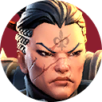
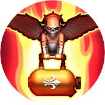
50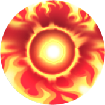
50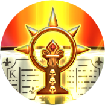
44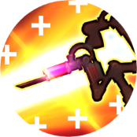
50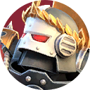
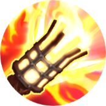
48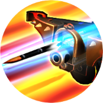
35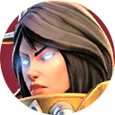
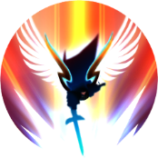
35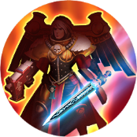
35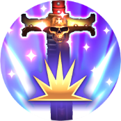
44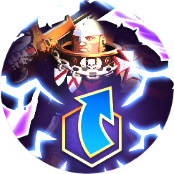
50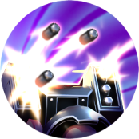
23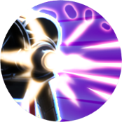
38This is a walkthrough of the Death Guard Extremis campaign event, using gold 1 35/35 Celestine and gold 1 48/35 Roswitha. This does not cover the challenge battles, nor does it give you a lightning victory in every battle. It does, however, give a 3-star clear in every battle, and it gives a lightning victory against Mortarion, netting you Typhus's relic. Also, the first six battles were simple enough that I did not bother copying the replays for them.
Epic Tier
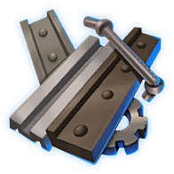
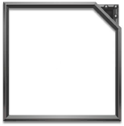
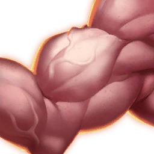
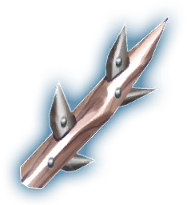
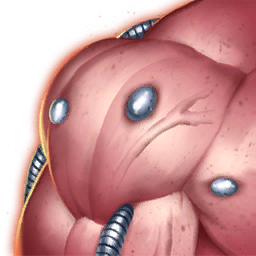
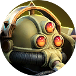
Legendary Tier
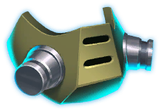
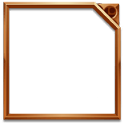
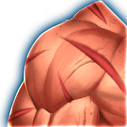
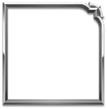
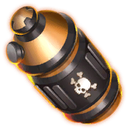
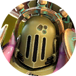
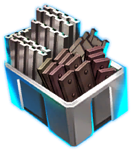
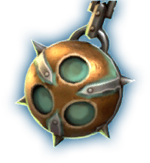
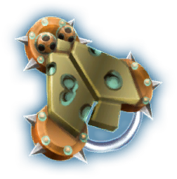
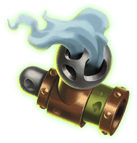
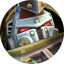
Mythic Tier
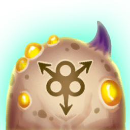
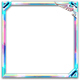
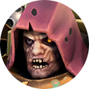
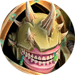
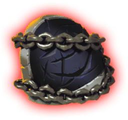